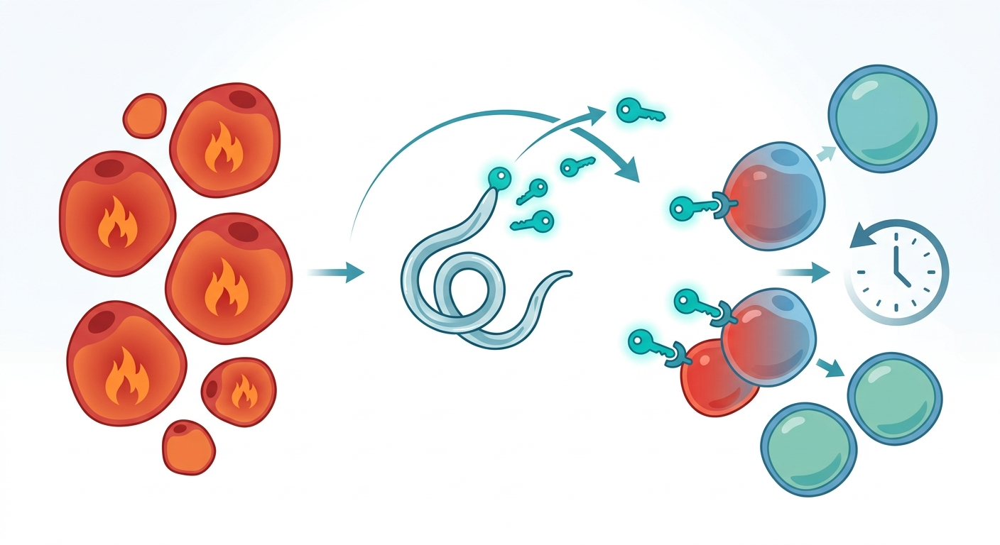

The Worm in the Machine: How a Parasite-Derived Protein Could Reset Our Metabolic Clock

Think of the human immune system as a highly secure vault, and chronic inflammation as a slow-burning fire inside it. For decades, modern medicine has searched for a key to douse this fire, particularly in adipose (fat) tissue, where chronic inflammation drives obesity, type 2 diabetes, and accelerated aging. Now, scientists may have found that key in an unlikely place: a parasitic roundworm. Trichinella spiralis, a nematode famous for causing trichinosis, has spent millions of years mastering host immune evasion. Rather than attacking the host, it acts like a molecular diplomat, whispering chemical instructions that calm the immune system down. In a groundbreaking new study published in PLOS Pathogens, researchers have successfully hijacked this parasite’s peace-making toolkit to reverse obesity and metabolic dysfunction in mice.
At the heart of metabolic decline is a cellular identity crisis. Within our fat tissue dwell macrophages—immune cells that act as both garbage collectors and sentinels. In a lean, healthy body, these macrophages exist in a peaceful, anti-inflammatory 'M2' state, maintaining tissue health. However, a persistent high-fat diet triggers a hostile shift, polarizing these cells into pro-inflammatory 'M1' warriors. These M1 cells spew inflammatory signals, locking the body in a state of chronic 'inflammaging' that degrades metabolic health. To disrupt this destructive cycle, the research team isolated a specific molecule secreted by Trichinella spiralis: a serine protease inhibitor known as Ts-SPI. By engineering a recombinant version of this protein (rTs-SPI), they discovered they could selectively target these hostile M1 macrophages and force them to stand down, effectively reprogramming them back into their healing M2 state.
The therapeutic magic of rTs-SPI lies in its precision. The researchers discovered that the parasite protein acts as a key that unlocks a specific molecular gatekeeper on the macrophage surface called TIM-3. This 'helminth-inspired checkpoint modulation' triggers an intracellular cascade through the PI3K/AKT/mTOR pathway—the cell’s central control panel for growth, survival, and metabolism. When administered to obese mice on a high-fat diet, rTs-SPI did not just halt weight gain; it systematically dismantled the inflammatory architecture of their fat tissue. Adoptive transfer experiments, where macrophages reprogrammed by rTs-SPI in a dish were injected back into obese mice, confirmed that these repurposed cells alone were capable of driving down inflammation and restoring metabolic harmony.
Yet, as elegant as this parasite-inspired strategy appears, translating a worm-derived protein into a human therapeutic remains a formidable mountain to climb. The human immune system is notoriously adept at recognizing foreign proteins, and chronic administration of a parasite-derived molecule like rTs-SPI risks triggering neutralizing antibody responses or, worse, dangerous systemic immunogenicity. Furthermore, while the TIM-3 pathway is a promising checkpoint target, modulating it systemically could have unintended consequences, potentially impairing the body’s ability to fight off actual infections or clear cancerous cells. Moving from high-fat diet mouse models—which do not fully replicate the decades-long, multi-factorial nature of human metabolic syndrome—to human clinical trials will require rigorous safety profiling, dose optimization, and perhaps engineering humanized versions of the protein to evade our own immune surveillance.
Sources & Citations:
Primary Source: Serine protease inhibitor from Trichinella spiralis ameliorates diet-induced obesity and adipose tissue inflammation through TIM-3-dependent macrophage reprogramming (PLOS Pathogens)
- Li, J., et al. (2025). Serine protease inhibitor from Trichinella spiralis ameliorates diet-induced obesity and adipose tissue inflammation through TIM-3-dependent macrophage reprogramming. PLOS Pathogens, 21(2), e1014606. https://doi.org/10.1371/journal.ppat.1014606